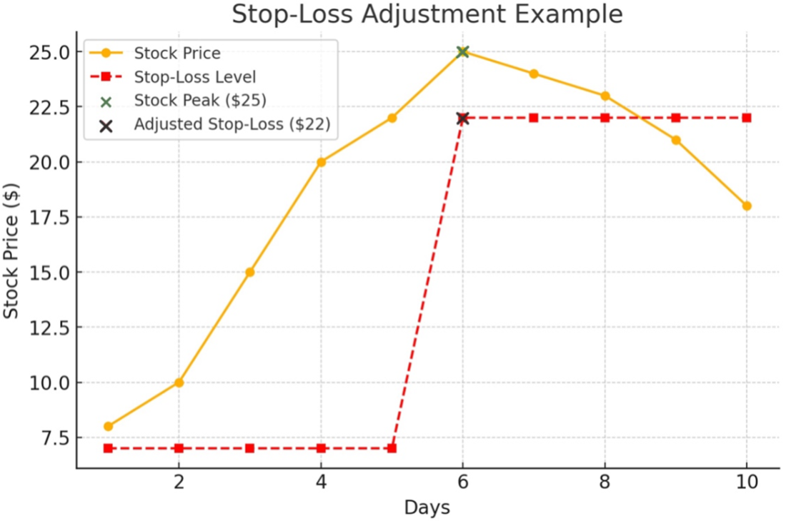
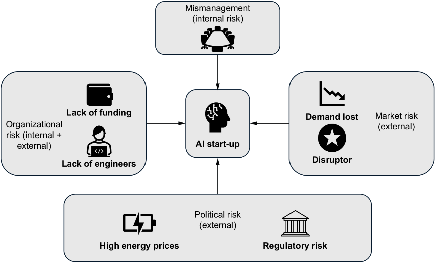
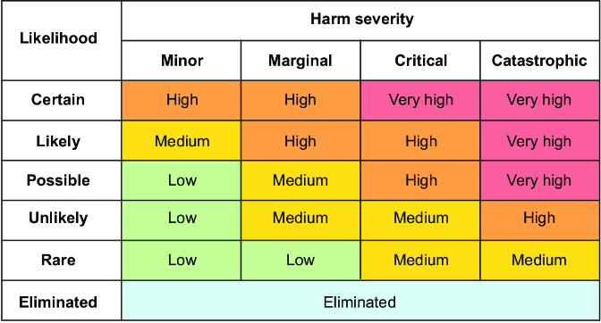
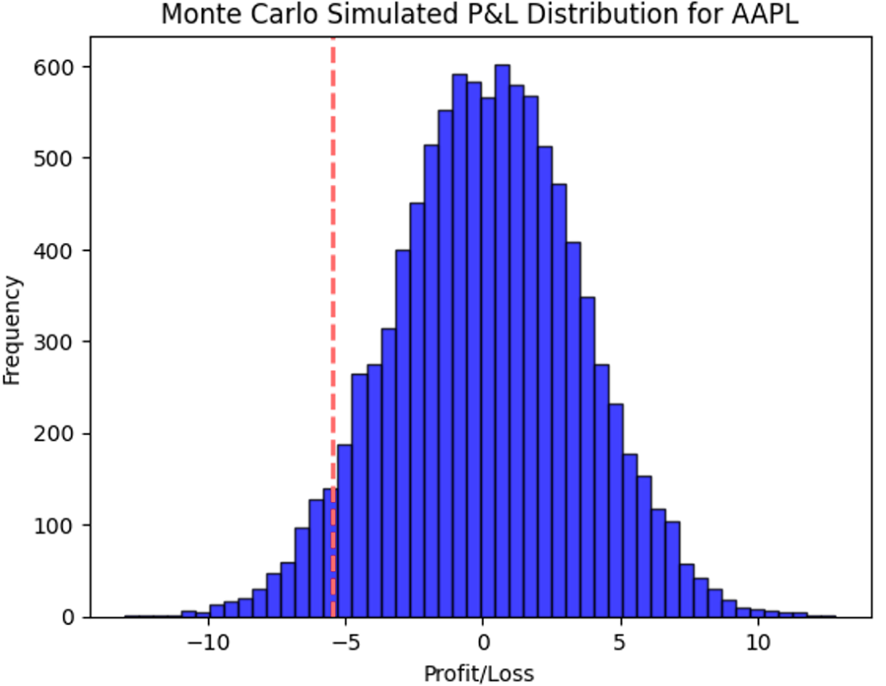
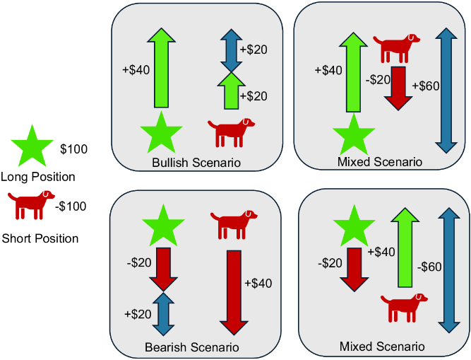
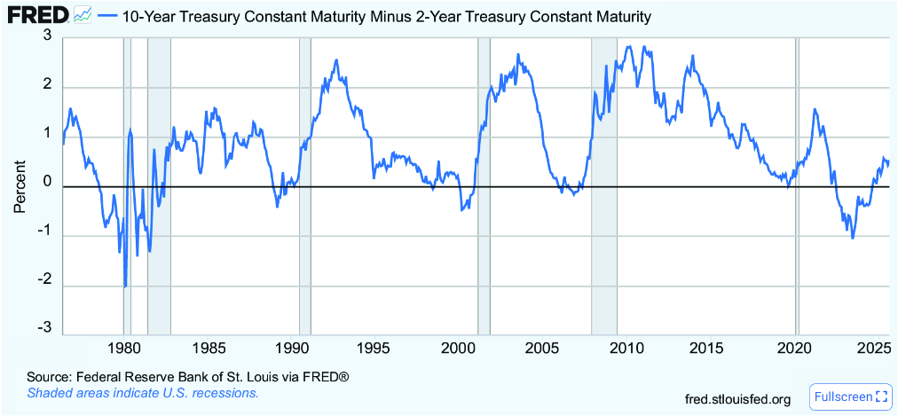
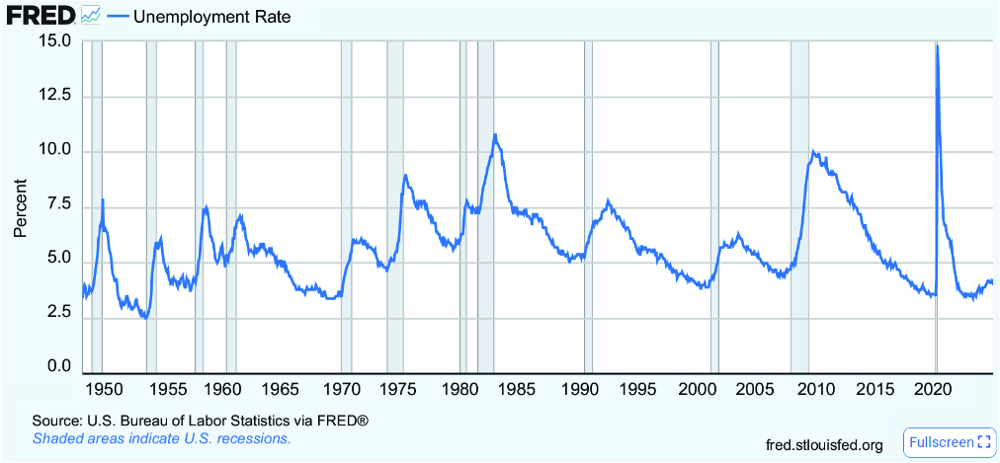
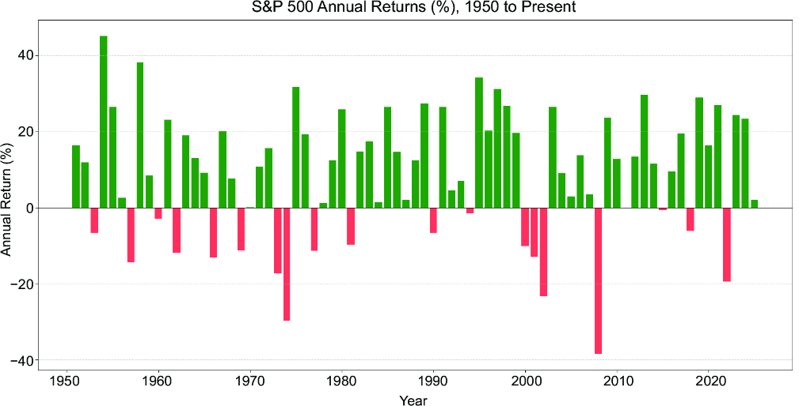
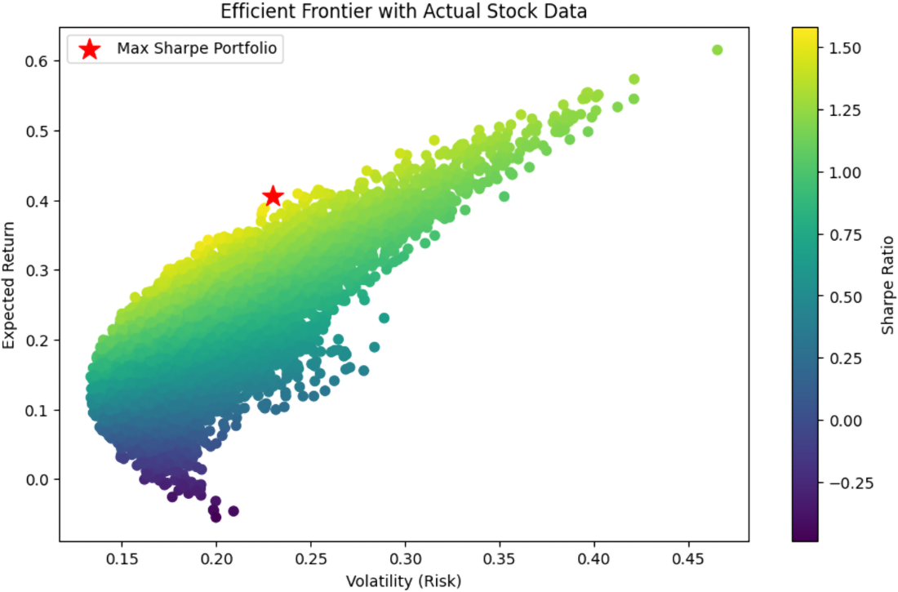
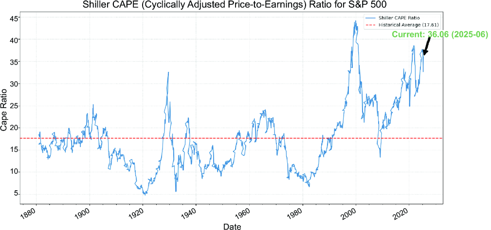

Exploring assets that can multiply their original value many times is thrilling. However, if you stake your life savings on extraordinary profits, you might find yourself sleepless at night, questioning whether you abandoned your common sense the moment you made that investment.
In our minds, we can picture the stereotype of a gambler who seeks the thrill. However, we can also envision a stereotype of a risk-averse investor: a dry person who lectures us on efficient market theory and continually advocates for putting all of our money into diversified ETFs. They occasionally insist that investing in single stocks with low-risk ratings is too risky. Encountering them when you dream about living in a big mansion with the potential returns can feel like a slap in the face. No matter how enthusiastic we are, they always have an explanation for why things won’t unfold as we hope. Whether it’s human bias, statistics about fund managers and their historical returns, or something else, the recommendation remains the same: you can’t beat the market, so invest in it by buying shares in index funds.
The debates about risks versus returns are endless. One side argues that investors like Warren Buffett, Jim Simons, and Peter Lynch have consistently outperformed the market, suggesting that anyone can do the same. Energy goes where attention flows; if you’re patient and self-reflective, you’ll become wealthy if you focus on the right topics. The other side keeps reasoning about the academic insights of giants such as Eugene Fama or Burton Malkiel, including the efficient market theory and random walks. It often seems that each side has its statistics: one shows that actively managed hedge funds by a strong fund manager beat passive funds, and the other claims that studies show that blindfolded monkeys throwing darts can pick a portfolio that beats those of seasoned investors, as the market is unpredictable.
This chapter can be seen as an antithesis to chapter 4, in which we focused on what we could gain if we analyzed the growth potential of stocks. Here, we explore what we can lose if things go wrong, arriving at the synthesis: we need to study both risk and returns and decide how much risk we can accept in a nondeterministic environment.
In this chapter, we first classify risks. After learning about risks, we examine ways to measure them and, finally, how to mitigate them.
In martial arts, the first lesson isn’t how to jump or kick—it’s how to fall safely. The Japanese call this ukemi. The same principle applies to systems: safeguard first, then scale.
Developers already understand this concept through test-driven development (TDD), where unit tests are written before the code. Experienced developers have likely encountered projects lacking clean code and TDD practices—they often turn into black boxes where small changes lead to unpredictable results. Returning to chaos is unthinkable once you’ve worked in a clean, structured environment. While clean development may seem slower due to peer reviews and careful implementation, it reduces costly bug fixes.
Risk management in investing follows a similar logic. By implementing best practices early, you prevent problems before they arise, protecting both your portfolio and peace of mind.
A crucial ukemi in investing is the stop-loss order. Think of it as a safety net: a predefined price at which your broker automatically sells a position to limit losses. If there’s one thing you can do to reduce stress, it’s setting a stop-loss for every position. Without it, investing is like performing acrobatics without a net—why risk unnecessary losses when they can be prevented?
Stop-losses can also be adjusted as share prices rise. Suppose you buy a stock at $8, which surges to $25. Believing in further growth, you initially set a stop-loss at $7. Instead of selling at $25, you raise the stop-loss to $22 after the surge. This resolves a common dilemma: if the stock climbs higher, you stay in the game, but if it falls, you still lock in gains at $22. Without a stop-loss, you might regret not securing your profits if the stock drops back to $8. Figure 7.1 illustrates a stop-loss order.

In chapter 11, we’ll cover how to set stop-loss orders effectively through an API. However, you can put one through your broker if you hold assets. Select Good Till Canceled for your order to keep your safety net in place.
As a developer, you thrive on creative momentum when implementing new features. The excitement of exploring ideas can feel intoxicating, and overthinking potential failures may slow progress.
The software needs to be deployed at some point, and the threat of real users complaining about bugs might keep developers and their managers awake at night. Suddenly, Murphy’s Law takes over—what can go wrong will go wrong, and your perspective shifts. Site reliability engineers (SREs) embody this mindset, ensuring flawless execution. While early-stage development is driven by creativity, SREs must think destructively, anticipating failure at every step. A good SRE always classifies and prioritizes risks.
Engineers recognize that a complete system outage is worse than a partial slow response time. Likewise, owning a stock experiencing daily share price fluctuations is preferable to holding assets in a company that goes bankrupt. Of course, the first scenario might lead to the second and can be a warning sign, and, at the same time, fluctuations are part of the market. To manage risk effectively, we must be able to measure risks and classify them by their possible effect.
To understand systemic risk, we can create a mental model of the market and identify events that could destabilize the entire system. Systemic risk refers to disruptions that threaten the financial system. A classic example is the 2008 financial crisis, where the collapse of major institutions nearly triggered an economic meltdown.
While doomsday scenarios such as nuclear war technically qualify as systemic risks, they are beyond the scope of financial planning. Building a bunker is more practical than safeguarding your portfolio if you’re worried about such events.
Excluding extreme catastrophes, we can still categorize financial risks systematically, helping investors prepare for market-wide threats and mitigate potential damage. Let’s see what can go wrong to understand how we can prepare ourselves:
Every investor hears this phrase at some point in their career: “Past performance is no guarantee of future results.” Relying too heavily on history repeating itself can lead to costly mistakes. Yet completely ignoring historical patterns is just as dangerous. Because we can classify risk, we must consider how to measure it based on past evidence.
The economy is a complex, interconnected system that moves in cycles—bubbles, crashes, and recoveries. While no event unfolds identically, recurring patterns emerge. The challenge is distinguishing between genuine trends and coincidences. This perspective helps macroeconomists predict the ripple effects of disruptions. Take the war in Ukraine: concerns over the Ukrainian grain harvest signaled potential famine risks, leading to fears of unrest in emerging markets that are rich in raw materials. Such unrest could disrupt mining, affecting companies reliant on gold, cobalt, and nickel. Similarly, sanctions on Russian gas drove up European energy prices, fueling inflation.
Figure 7.2 illustrates risk factors for a hypothetical US-based AI company. What if an emerging AI platform such as DeepSeek disrupts the market in 2025? Or what if a societal countermovement against AI gains traction, which can be seen as a market risk, making it harder to sell AI services? AI developers in some countries experience more challenging regulatory environments than their peers from different regions. Those who worked in environments with more strict regulations can attest that new regulatory frameworks might become a problem for companies unprepared for this change.

These are just a few potential risks, reinforcing the “Understand the businesses you invest in” principle. Before investing, ask yourself these questions:
If not, reconsider your investment. Otherwise, you would have to learn how catalysts, which you’re unaware of, play a role in driving share prices up and down.
Figure 7.3 presents a risk matrix to classify threats. Take the risk of an anti-AI movement: unlikely, but potentially catastrophic if it gains momentum and demands AI bans. Another risk—rising energy prices—could slow AI expansion if power plants can’t scale fast enough to control costs.

To use risk matrices efficiently, you can review your positions and assess risks to define actions. Let’s go through an example. Let’s assume you hold Coca-Cola, Apple, and Pfizer stock. You can research possible risk scenarios, such as the following: “What if there is another pandemic?” or “What if there are new trade wars?” Let’s assume further that we conclude through a small assessment of the current political situation that, based on a personal evaluation, we consider an escalation of a trade war between the United States and China as possible. Then, we can go through all positions in the portfolio. Quick research and personal assessments indicate that potential harm from Coca-Cola and Pfizer is marginal. Still, we may conclude that an escalation of a trade war would be critical for Apple, leading to a high-risk rating based on the matrix.
Investor Ray Dalio recommends acting on principles when investing. Some investors may decide to get active in times of high risk. Others might be more relaxed and act only when the risk rating reaches “very high.” One key principle of managing risks is to define what to do if catastrophes happen. Defining concrete actions when events occur and following these actions no matter what ensures efficiency.
So, let’s assume you decide your principle is to sell all shares when they reach the highest risk level, and let’s imagine an event that makes a trade war certain. Following your principle, you would immediately sell all the shares of high-risk companies. Yes, this may sound bureaucratic, but you can never forget a quote attributed to Mike Tyson: “Everybody has a plan until they get punched in the face.” When filled with emotions, you might still do the right things, if you have clear guidance on what to do. Without guidance, and when panic takes over, it can become more difficult to make rational and correct decisions.
Assessing risks also means understanding beta, a measure of an asset’s sensitivity to market fluctuations:
Think of beta like a system’s performance under load. High-beta assets spike under stress, while low-beta assets remain stable.
Beta often aligns with common sense. In a bear market, unemployment rises, consumers prioritize essentials (supermarkets benefit), and discretionary spending declines (car dealers suffer). However, company-specific risks can be independent of market trends—mismanagement alone can drive a company into distress. In the next section, we’ll explore how to measure risk effectively.
Historical data about a company helps us assess performance by examining fundamental factors (e.g., debt trends). In addition, we can study chart movements, often referred to as technical analysis, to explore the potential risks of a decline in share prices. The approach varies based on a company’s stage and size.
As a programmer, you’ve likely encountered applications with inconsistent response times—high variability erodes user trust. The same principle applies to stock prices. If an asset’s price has fluctuated significantly in the past, it signals risk. And sometimes, what goes down doesn’t always come back up. Let’s take a deeper look at past price movements.
Value at risk (VaR) is a tool for measuring the potential loss of an investment or portfolio over a specified period, under normal market conditions, at a given confidence level. It answers the question, “What’s the worst loss I could face, and how likely is it?”
As a programmer, you can think of VaR as setting a threshold for system downtime: “What’s the maximum downtime we might experience within a week, 95% of the time?” Now, replace “downtime” with “loss,” and that’s essentially what VaR is. Let’s break it down:
Here’s a practical example: your portfolio is worth $1,000,000. Analysts estimate a one-day VaR at 95% confidence of $30,000. This means there’s only a 5% chance your portfolio will lose more than $30,000 on any given day. So, 95% of the time, your loss will be $30,000 or less.
To calculate VaR, we simulate the potential future risks based on historical data. There are two common approaches:
Using these methods, we can estimate the potential risk to our portfolio, just like you’d analyze system performance under different scenarios.
A Monte Carlo simulation is a computational technique for modeling the probability of different outcomes in a process with inherent uncertainty. It relies on repeated random sampling to obtain numerical results, making it useful for scenarios where traditional analytical methods are infeasible. In listing 7.1, we outline an example of a Monte Carlo simulation using Apple share prices. We need parameters such as confidence level. Then, we load the stock data to collect returns and calculate the means and standard deviation. This is the basis for running a Monte Carlo simulation, meaning we simulate future returns based on past returns. We plot and print the results.
import numpy as np
import yfinance as yf
import matplotlib.pyplot as plt
ticker = "AAPL" #1
confidence_level = 0.95 #1
num_simulations = 10000 #1
time_horizon = 1 #1
stock = yf.Ticker(ticker) #2
hist = stock.history(period="1y") #2
returns = hist['Close'].pct_change().dropna() #2
mu = returns.mean() #3
sigma = returns.std() #3
last_price = hist['Close'].iloc[-1] #4
sim_returns = np.random.normal(mu,
sigma,
num_simulations) #4
sim_prices = last_price * (1 + sim_returns) #4
threshold = np.percentile(sim_prices - last_price,
(1 - confidence_level) * 100) #5
plt.hist(simulated_prices - last_price, bins=50,
alpha=0.75, color="blue", edgecolor="black") #6
plt.axvline(threshold, color="red",
linestyle="dashed", linewidth=2) #6
plt.title(f"Monte Carlo Simulated "
f"P&L Distribution for {ticker}") #6
plt.xlabel("Profit/Loss") #6
plt.ylabel("Frequency") #6
plt.show() #6
print(f"{confidence_level * 100}% Monte Carlo "
f"VaR for {ticker}: ${-var_threshold:.2f}") #6
Figure 7.4 shows the result of a Monte Carlo simulation as a plot, outlining that this stock is relatively stable. The results indicate that there is a 95% chance the loss won’t exceed $5.50 per share.

For this, we calculated an example based on Apple. We can run a Monte Carlo simulation on all portfolio stocks and aggregate these results to the total VaR of the whole portfolio.
Please remember that Black Swan events are unpredictable events beyond what is normally expected. Excluding these outliers, VaRs can be seen as worst-case scenarios based on historical data under normal circumstances. Investors can calculate the VaRs of all their holdings and match them with their risk appetite. In some cases, investors may decide to decrease (or also increase) the risks.
Correlation measures how assets move relative to one another. Positively correlated assets move in the same direction; negatively correlated ones move oppositely. It’s like service dependencies—when one microservice fails, does it take down others?
In chapter 3, we already logged returns and simple returns. Using the code we used in previous chapters, let’s load the data for three companies:
def collect_prices_returns(tickers: list):
close_prices = pd.DataFrame()
log_returns = pd.DataFrame()
for ticker in tickers:
close_prices[ticker] = yf.Ticker(ticker).history(
start='2024-01-01',
end='2024-12-31',
interval="1d")['Close']
log_returns[ticker] = np.log(close_prices[ticker]
/ close_prices[ticker].shift(1))
return close_prices, log_returns
tickers = ["MSFT", "AMZN", "GOOGL"]
close_prices, log_returns = collect_prices_returns(tickers)
Now that we have the log returns and the closing prices in memory, we can run a fundamental statistical analysis. The following code shows how to run the mean, standard deviation, and variance aggregations on the stock prices:
price_stats = (
close_prices[tickers]
.agg(['mean', 'std', 'var'])
.T.reset_index()
.rename(columns={'index': 'ticker'})
)
The closing prices of the stocks fluctuate, as shown in table 7.1, over the year.
|
Company
|
mean
|
std
|
var
|
|---|---|---|---|
| Microsoft (MSFT) |
418.73445 |
18.19813 |
331.17207 |
| Amazon (AMZN) |
184.49020 |
17.32285 |
300.08126 |
| Alphabet (GOOGL) |
163.31029 |
15.40605 |
237.34623 |
Let’s investigate standard deviation (std) and variance (var). Variance measures the average squared deviation from the mean. It tells you how much the values in a dataset spread out from the mean. Variance is in squared units, making it less interpretable for practical use.
Standard deviation is simply the square root of variance. It measures the same dispersion but in the same units as the original data, making it more interpretable. Variance (var) is helpful in theoretical statistics and when comparing relative dispersion across datasets. standard deviation (std) is used in most practical applications because it retains the original unit of measurement.
Tip As some analysts may use variance, it’s still essential to understand how variance can be used in financial analysis. Otherwise, you can focus on standard deviation in your analyses.
Previous chapters show that the overall share price is just one part of a company’s capitalization; for example, 418 (the mean of Microsoft) doesn’t mean we’re doing better than 163 (the mean of Google). A company’s share price is just a number that doesn’t relate to any other share price. If Microsoft decided to split the shares 1:10, the mean would be 41.8, with 10 times more shares than before.
The absolute price of a share in a given currency is not a reliable measure for comparing the performance of different stocks. For meaningful comparisons, we should use percentage changes in value, with log returns offering an even better basis for analysis:
rets = (
log_returns[tickers]
.agg(['mean', 'std', 'var'])
.T * [TRADING_DAYS, TRADING_DAYS**0.5, TRADING_DAYS]
)
rets = rets.reset_index().rename(columns={'index': 'ticker'})
rets
The results of this script, shown in table 7.2, help us compare the companies. Microsoft was more stable during the test period than Amazon and Alphabet. Keep in mind that these patterns might be different in other years.
|
Company
|
mean
|
std
|
var
|
|---|---|---|---|
| Microsoft |
0.14443 |
0.20078 |
0.04031 |
| Amazon |
0.39247 |
0.28154 |
0.07926 |
| Alphabet |
0.33129 |
0.28045 |
0.07865 |
Let’s put stocks in correlation: when calculating the covariance between stocks, you measure how their returns move relative to each other. Covariance helps you understand the relationship between different assets in a portfolio. If we call the cov() method on the DataFrame with the log returns and multiply it with the number of trading days, we get the covariance matrix:
cov_matrix = log_returns.cov() * TRADING_DAYS cov_matrix
Let’s look at the results. Covariance tells us if the variables move together, but not how much. If the covariance value is larger than 0, the assets tend to move in the same direction, and if the value is lower than 0, they tend to move in opposite directions. The numbers in table 7.3 indicate that there might be some dependencies among the price movements of these three stocks.
|
Company
|
MSFT
|
AMZN
|
GOOGL
|
|---|---|---|---|
| Microsoft |
0.04031 |
0.03887 |
0.03239 |
| Amazon |
0.03887 |
0.07926 |
0.04290 |
| Alphabet |
0.03239 |
0.04290 |
0.07865 |
We need the correlation to understand how much these variables move with each other. This tells us both the strength and the direction of the relationship. Correlation standardizes covariance by dividing by the standard deviation, resulting in a bounded value between –1 and 1. We get results such as the following:
To calculate the correction, we need to run the corr() method on the DataFrame with the log returns. Note that as the correlation is independent of dimensions, we don’t need to multiply by trading days as we had to with the covariance:
corr_matrix = log_returns.corr() corr_matrix
Like variance and standard deviation, we might prefer one method (correlation) over the other (covariance). As covariance might be used in some analyses, it’s still helpful to know that this method exists.
Looking at the results in table 7.4, we get deeper insights. These three companies correlate a lot, which is logical. They all focus on cloud computing and AI, and they provide similar solutions to clients.
|
Company
|
MSFT
|
AMZN
|
GOOGL
|
|---|---|---|---|
| Microsoft |
1.00000 |
0.68765 |
0.57522 |
| Amazon |
0.68765 |
1.00000 |
0.54331 |
| Alphabet |
0.57522 |
0.54331 |
1.00000 |
This leads to a hypothesis: if the market believes there is no more room to grow in the cloud business or the AI hype is over, all three positions might lose heavily. Let’s look at another example by comparing NVIDIA with Walmart:
close_price, log_returns = collect_prices_returns(["WMT", "NVDA"]) corr_matrix = log_returns.corr() print(corr_matrix)
Looking at table 7.5, we observe an intuitively correct result. NVDA is a technology stock. If things go well, investors will believe in AI growth and purchase stocks like NVIDIA’s. However, they might want to move to more defensive stocks, such as Walmart, if they start doubting AI.
Conclusively, one possible strategy is to pick stocks with a negative correlation. Based on historical data, if NVIDIA goes down, Walmart goes up. This might reduce possible gains in a sunny-day scenario, but also mitigate losses in a rainy-day scenario.
|
Company
|
WMT
|
NVDA
|
|---|---|---|
| Walmart |
1.00000 |
-0.00532 |
| NVIDIA |
-0.00532 |
1.00000 |
This means we can use algorithms to assess risks. Before applying concrete hedging techniques to mitigate risks, let’s explore risk on a more generic level.
Many engineers have encountered this scenario: the company brings in a new, ultra-strict chief security officer (CSO). Suddenly, after enjoying freedom in previous roles, you now need approvals for everything. Simple tasks become bureaucratic nightmares, requiring endless workarounds.
Yet, despite the fortress-like security policies, you stumble upon something absurd—an outsider with unrestricted access to server rooms for maintenance work or hidden “super users” with god-mode permissions.
Investing works the same way. Strict risk controls can give a false sense of security, while hidden vulnerabilities can expose you to unexpected threats. Let’s explore this further and how this connects with investment.
Ask any cybersecurity engineer about the most significant threat, and the answer is likely human negligence. Technical security is deterministic—you can model interactions, strengthen encryption, and enforce multifactor authentication. But you can’t stop someone from writing their password on a sticky note beside an unlocked phone.
The same applies to investing. Your most considerable risk isn’t just market volatility or scams—it’s your own psychology. Engineers who understand blockchain may avoid crypto scams but still fall victim to greed, fear, and impulsive decisions. Technology can help: you can set trading limits, restrict access, or execute orders at fixed intervals—but when emotions take over, those safeguards can be overridden.
No security manual can eliminate user mistakes, and no investing book can erase emotional biases. However, awareness is the first step. Fear of Missing Out (FOMO) causes investors to chase unsustainable gains, but recognizing this bias helps mitigate its effect.
Engineers working in teams use methodologies such as Scrum to improve processes through retrospectives. Investing benefits from a similar approach—analyzing past decisions with hard data and peer reviews. By tracking your portfolio (chapter 6), you gain insights into what worked and what didn’t.
If you know your psychology is a weak point, take action. Self-reflection—understanding your deeper motivations—extends beyond trading into personal growth. Brokers offer risk management tools, such as these:
Sometimes, that extra waiting period is the difference between a reckless gamble and a rational decision after a night’s rest. Like cybersecurity, investing isn’t just about technical expertise—it’s about controlling human behavior, including your own.
Financial advisors and brokers often begin assessing your risk appetite during the Know Your Customer (KYC) process. Despite what some die-hard advocates may claim, there’s no single best investment strategy—only strategies that align with your risk tolerance.
The simplest way to mitigate risk is to choose safe investments. Index funds, for example, are widely considered low-risk. While individual companies can fail, index funds would only collapse if the entire economy did—at which point, our portfolio performance would be the least of our concerns.
Many investors view index funds as the holy grail of investing. After all, if the odds of beating the market are low, why take unnecessary risks trying? Many people also worry about the “perfect” time to invest. After making a purchase, they often panic if the market dips, leading to short-term mistakes. To mitigate this, you can use dollar-cost averaging (DCA)—investing a fixed amount at regular intervals, regardless of market conditions. While not perfect timing, DCA reduces the risk of buying at a peak and smooths out market volatility over time.
A balanced approach works well if you still want to invest actively. You can allocate a fixed amount to index funds and a smaller portion to individual investments. And if you beat the performance of index funds multiple years in a row, you can still adjust the ratio of actively and passively managed investments as much as you like.
The most obvious risk-reduction strategy is investing in businesses you understand. Familiarity allows you to assess risks more accurately and identify opportunities others might overlook. This aligns with value investing, which focuses on buying undervalued companies based on fundamental analysis.
One core principle of value investing is the margin of safety—buying assets priced below their intrinsic value to provide a cushion against potential losses. To use an engineering analogy, imagine a client requests an application that must handle 100 peak-load requests. If you build it to handle exactly 100, there’s no margin for unexpected surges. The same applies to investing—without a margin of safety, even a slight miscalculation can lead to failure.
The risk-return tradeoff is like scaling a system—you can choose a safe, low-performance setup or an aggressive, high-performance architecture with potential failure risks. If your portfolio feels too risky, you can shift future investments toward safer assets. But the key is always risk awareness. Some strategies carry exceptionally high risks:
Understanding risk appetite versus risk capacity is crucial. Risk appetite is your willingness to take risks, while risk capacity is your ability to withstand losses. Think of it like coding for edge cases—you might be comfortable experimenting in a development environment (appetite), but you wouldn’t push risky, untested changes to production (capacity).
Imagine you buy two stocks at the same price. After a year, Company A dropped to 20% of its initial value, while Company B rose to 150%. You decide to sell one. Which one? Most investors instinctively sell Company B, locking in gains while hoping Company A recovers. But what if Company B keeps rising and Company A continues its decline?
Athletes, especially tennis players, often lose momentum after a mistake. The best ones recover quickly. Successful investors do the same—they accept losses, adapt, and move forward. Every investor loses money at some point. The key is handling it wisely.
Loss aversion—the tendency to avoid realizing losses—traps many investors. You may hesitate to sell a losing stock, thinking it might rebound or that you’ll only lose if you sell. However, ignoring loss aversion can lead to even bigger losses. Instead, step back and remove emotions from the equation.
Imagine evaluating your portfolio from scratch. If you didn’t own Company A, would you buy it today? Is it truly undervalued, or is it in a downward spiral with no recovery? If the latter, sell it and reallocate the funds elsewhere.
Conversely, if new information suggests Company A is a great buy, you might invest more. But be brutally honest—don’t let sunk costs cloud your judgment.
This book teaches you how to analyze markets with algorithms, not what to invest in. If you struggle with tough decisions, recognize that your emotions and biases can distort judgment.
A trusted peer review, such as Warren Buffett’s with Charlie Munger, can help. But choose your advisors wisely:
Ultimately, the smartest investors cut losses, reassess facts, and stay disciplined—even when it’s uncomfortable. The ability to face discomfort with a rational mind and be ready to follow thought-through principles may be one of the most significant successful factors in investing.
Most of us have encountered Murphy’s law: What can go wrong, will go wrong. Developers embrace this mindset, building metrics to assess code quality and unit tests to catch potential failures. This habit of assuming the worst and preparing for it is invaluable in investing.
Hedging is a risk management strategy that reduces or offsets potential losses, like insurance. You sacrifice some potential gains to protect against severe downturns by taking an opposing position in a related asset. While it won’t eliminate risk entirely, it helps you sleep at night, knowing you’re shielded from extreme scenarios. Next, let’s explore some practical ways to mitigate risk.
Derivatives are arrangements whose value derives from an underlying asset, such as a commodity, currency, or security. They can be categorized this way:
Let’s illustrate these concepts with examples:
This structured agreement ensures both parties benefit by securing better loan terms and minimizing exchange rate fluctuations.
Ongoing discussions debate whether randomly picking stocks—akin to throwing darts—can yield better results than actively managed funds, a question raised by Burton Malkiel in A Random Walk Down Wall Street. While opinions vary, nearly everyone agrees that putting all your eggs in one basket is risky. Significant risks remain even if you invest in a company with the highest market capitalization, such as one of the Magnificent Seven (Alphabet, Amazon, Apple, Meta, Microsoft, NVIDIA, and Tesla). The company might not face bankruptcy in your lifetime, but stock prices reflect market sentiment. You could buy at a peak, only to see years of stagnation or decline.
A common risk-management strategy is diversification—avoiding a single point of failure. Programmers can relate: relying on a single server invites disaster if it crashes. But does spreading investments across all Magnificent Seven stocks provide proper diversification? As we’ve learned, fluctuations in stock prices are often correlated. These companies share the same sector, so events affecting one could affect them all. While your eggs may be in seven baskets, they’re still in the same AI truck heading down the road of capital appreciation—if that truck veers off course, all of your eggs are at risk.
Proper diversification means reducing exposure to a single market. This could involve holding stocks across different sectors or investing in a mix of assets such as bonds and real estate.
Pair trading is a market-neutral strategy where an investor goes long on one asset and short on another, typically within the same industry or among correlated assets. The goal is to profit from relative price movements rather than overall market direction, reducing exposure to market fluctuations.
Let’s consider a practical example. Suppose you analyze two AI sector companies:
You short $100 of Company B’s stock and use the proceeds to buy Company A’s stock. If the AI boom continues, Company A will grow significantly while Company B will rise only slightly. Your trade is profitable, provided interest costs on your short position don’t erode gains.
Now, let’s explore a different scenario. Suppose the AI market crashes due to competition from a Chinese AI firm or overvaluation concerns. If both stocks decline, you lose on your long position but gain on your short position, potentially offsetting losses.
However, risks remain. Short selling incurs interest costs, and if your prediction is wrong—Company A declines while Company B unexpectedly rises—you could face amplified losses. Proper risk management is essential. Figure 7.5 outlines this principle, marking Company A as a rising star and Company B as a poor dog, which are the Boston Consulting Group (BCG) Growth-Share Matrix classifications.

Passion for innovation can drive investment decisions. Some see Small Modular Reactors (SMRs) as the future of energy, while others envision carbon capture technologies such as direct-air capture becoming financial gold mines. However, investing in emerging technologies is inherently risky.
Yes, data centers require constant energy, and nuclear power is promising, but what if SMRs fail to meet expectations or public sentiment stalls their adoption? Similarly, direct-air capture aims to remove CO2 from the atmosphere, but its success hinges on reducing operational costs. What if that never happens?
Balancing speculative bets with stable investments is a smart way to manage this risk. The key is understanding your risk tolerance. For instance, if 80% of your portfolio is in index funds and 20% in high-risk assets, even a total loss in the speculative portion wouldn’t threaten your financial foundation. Over time, the growth of stable investments can help absorb those losses, making risk more manageable. In addition, you can use staged investing. Assuming that, as a developer, you have streaks of high income, you can keep investing smaller portions into emerging technologies while maintaining the 20% to 80% risk ratio.
Some risks aren’t reflected in a company’s financial statement and can be summed up as nonfinancial risks. The subcategories are broad and may differ by industry. The overall global economic situation, for instance, affects all companies. Economic downturns harm companies unless a business model is targeted to perform well during crises.
The 2020s are likely to be a decade that leads to more global challenges than many other decades before. COVID-19 and geopolitical conflicts have created challenges in many parts of the world. With the unfolding of social media and AI, we also witness more extreme views. Many people speak about a very heated and aggressive situation in many countries. They are afraid that a straw will break the camel’s back at some point, and we’ll end up with big riots and unrest in which religious and political extremists fight each other.
Optimists might disagree with this view and assert that everything will be all right. As an investor, you can remain impartial. Will there be unrest in country X? The correct answer might be “I don’t know!” Instead, we’re interested in the probability of unrest. We need to find ways to quantify risks in numbers. Let’s explore potential methods to measure nonfinancial risks, encompassing all risks not addressed by financial risk management.
Market trends are commonly symbolized by two animals: the bull and the bear. These aren’t just arbitrary animals; they symbolize specific movements in the market:
Some investors get overexcited during bull markets. They take too many risks to replace good gains with exceptional gains. However, ignoring risks by picking random securities that promise huge gains without looking into the details of those assets can lead to a disaster.
Some investors might tell you to ignore Mr. Market. If you’ve invested in solid companies with a bright future, their share price may decrease during a bear market, but the future looks bright in the long run. At the same time, you can’t ignore that sometimes companies might get into serious trouble during a market crisis, from which they can’t recover. Selling them as soon as possible is often the only alternative to minimize permanent losses. Making the right decisions is hard. You don’t have all the information you need, and psychological factors might affect you. Looking at a position when it’s 20% below the purchase price still gives you the idea that there can be a turnaround. But selling that position at 20% below the purchase price is like acknowledging a loss. For many of us, this leads to negative emotions. It’s human to push these feelings away and to keep the illusion that everything will be good again at some point, even if some facts tell us that it would be better to walk away with a slight loss.
As a risk-taker, you might see a bear market as an opportunity to short sell assets. This means you borrow shares from someone to sell them and repurchase them at a lower price later. While famous investors, such as Michael Burry, became wealthy by predicting the housing bubble crash in 2008, other investors had been wrong with their predictions.
Managing emotions and sticking to discipline and fact-based decision-making may be key to being a good investor. Anyone who feels that they might not have the nerve to stay disciplined during difficult times or knows they won’t be able to sleep when the market is in turmoil should consider adjusting their strategy to their risk profile.
Some investors try to sell growth stocks at the end of a bull run to stock up on defensive stocks. Once the next bear market is over, you can repurchase growth stocks at a lower price. This leads to one big question: Can we predict a bear or bull market?
Some analysts try to look at economic data to predict a recession. One of these metrics is the “10-Year Treasury Constant Maturity Minus 2-Year Treasury Constant Maturity.” Some investors see the spread between the yields on 10-year and 2-year US Treasury bonds as a yield curve proxy indicator of a recession. Figure 7.6 shows a graph that outlines these numbers.

Another indicator is the unemployment rate, which we can collect through the Federal Reserve Economic Data (FRED), as shown in figure 7.7. The more people are employed, the greater the risk we face. We might exclude 2020, as the COVID-19 crisis resulted from unforeseeable events.

The graph shows that unemployment gradually increased before most recessions. Then, when the recession was here, it went up enormously.
Reading charts can only give you indications. Whoever listens to podcasts and interviews with experts will detect contradicting views. While some predict imminent crises, others predict colossal growth.
Public companies must report their numbers using predefined standards and would be in trouble if they violated the regulations. Some accountants might try to disguise some unpleasant details with tricks in their reporting, but experienced financial data analysts have a framework in which they can interpret the numbers and decide if something is off.
We’ll investigate nonfinancial data in chapter 11 in more detail to explore how we can integrate insights outside of financial statements into more advanced analyses. For now, let’s start with the awareness that nonfinancial risks are defined by what they are not. We might look for social media sentiments, weather data, and other sources. Still, unlike financial data, no central data repository is available to host all possible data to analyze nonfinancial risks. It wouldn’t even be clear what we would need to store.
Let’s reference the fictitious case study for ACME that we used to discuss options trading. Let’s assume a disgruntled customer, Mr. Coyote, sues ACME Corporation because their products don’t live up to the promises in the sales material. Let’s also assume that his case gets some media coverage. How can we rate the reputation risk for ACME? Experienced analysts may take similar cases from the past as a reference and assess the reputation risk for ACME; others might analyze the sentiments on social media posts related to the case. However, different analysts may come to different conclusions.
The ACME case study is most likely only relevant to one company. Let’s also look at a systemic risk. Let’s assume a country gets a new political leader. We can analyze transcripts of speeches and create sentiment analyses based on keywords. This way, we might also detect hidden messages between the lines. We might also investigate the election campaigns to determine who donated how much to this new leader to understand his priorities further.
Let’s assume this new leader is erratic, contradicts his predecessors, and does many things differently. Some investors might view a country’s political leader as a risk to the economy, while others may assume that he will stir up stagnation and do good things. Maybe some companies will benefit while others suffer. It’s challenging to translate behavior into risk. While many believe that a politician who is rude, aggressive, and with plenty of evidence of narcissistic behavior must be a risk for every country, we might lack proof for what we might call common sense. Predicting the future based on data requires enough historical data. As every leader of the past is a different person who ruled under other circumstances, it’s hard to create an accurate model to compare current performance with past performance. Therefore, analyses based on nonfinancial risks, especially politics-related ones, can be speculative: It’s likely harder to predict the possible effect of a legal case or elections on a corporation’s share price than assessing the financial risk of a company going bankrupt.
One additional question is whether we’ll group nonfinancial risks into subgroups. The following is one attempt:
Professional investors and organizations, such as central banks, have more refined risk taxonomies, which may be overkill for a private investor to study. We can also dive deeper into specific risks. The current decade has experienced a pandemic, geopolitical conflicts, political paradigm shifts, and the effect of climate change through wildfires and hurricanes. Instead of asking on a generic level, such as what ESG risks a company might face, we can also ask more concrete questions: How will climate change affect that company’s business?
We may consider two approaches to addressing the topic. We can develop individual scoring systems that collect data from various sources and build algorithms. If we take our work seriously, we could write books about each risk type and company, as we might consider building digital twins and simulating the effect of various catastrophes.
As this is a lot of effort, we may use an alternative approach. In chapters 8 and 9, we examine large language models (LLMs) in more detail. But if we agree that risk assessments always contain room for error because there are unknowns, we can also use LLMs for basic risk assessments, knowing that they might hallucinate. Even if we need to review an LLM’s response, we might still discover patterns that are helpful in our risk strategy. In chapter 8, we’ll also provide an example of how to assess nonfinancial risks.
Let’s explore how to optimize our portfolios. We can collect data and then define the riskiness of individual positions. We can also use these techniques to create portfolios that optimize risk and return rates. Let’s start by exploring the Markowitz-efficient portfolio in detail.
A Markowitz-efficient portfolio is any portfolio that lies on the efficient frontier, as defined by modern portfolio theory (MPT), introduced by Harry Markowitz in 1952. The efficient frontier represents the set of optimal portfolios that offer the highest expected return for a given level of risk (standard deviation). A portfolio is Markowitz-efficient if there’s no other portfolio with a higher return for the same risk or a lower risk for the same return. These portfolios are obtained by diversifying assets to minimize variance while maintaining an optimal return. We do this by loading data in memory, comparing past share price volatility and returns, and constructing a portfolio that optimally balances risks and returns.
Let’s see how to create an efficient portfolio. In listing 7.2, we start by loading stock data. For this example, we take Apple (AAPL), Walmart (WMT), Alphabet (GOOGL), Coca-Cola (KO), Pfizer (PFE), Berkshire Hathaway (BRK-B), and NVIDIA (NVDA). In the code, we collect data for three years.
import numpy as np
import pandas as pd
import matplotlib.pyplot as plt
import yfinance as yf
from datetime import datetime, timedelta
def load_stocks(tickers, year_backs):
start_date = datetime.today() - timedelta(days=365*year_backs)
end_date = datetime.today()
stock_data = yf.download(tickers, start=start_date, end=end_date)['Close']
return stock_data.pct_change().dropna()
tickers = ["AAPL", "WMT", "GOOGL", "KO", "PFE", "BRK-B", "NVDA"]
year_backs = 3
returns = load_stocks(tickers, year_backs)
After loading the data with the returns, we set up the parameters for calculating the efficient frontier in listing 7.3. The number of trading days doesn’t equal the number of yearly days, as we must factor in weekends and public holidays.
TRADING_DAYS = 252 mean_returns = returns.mean() * TRADING_DAYS #1 cov_matrix = returns.cov() * TRADING_DAYS #1 num_portfolios = 10000 #2 num_assets = len(tickers) #2 port_returns = np.zeros(num_portfolios) port_volatility = np.zeros(num_portfolios) sharpe_ratios = np.zeros(num_portfolios) all_weights = np.zeros((num_portfolios, num_assets))
It’s time to talk about the risk-free rate and the Sharpe ratio. The Sharpe ratio, developed by William F. Sharpe, is a performance measure used to evaluate the risk-adjusted return of a portfolio. A higher Sharpe ratio means the portfolio has a better return per unit of risk. A Markowitz-efficient portfolio doesn’t necessarily have the highest Sharpe ratio. The tangency portfolio on the efficient frontier, which maximizes the Sharpe ratio, is often the best portfolio when risk-free borrowing/lending is allowed.
Think of the Sharpe ratio as a return-to-risk efficiency metric, which measures how much helpful work a function does per unit of computational cost. In investing, it tells you how much extra return you get per unit of risk taken.
Some investments are de facto risk-free, ignoring black swan events; the assets can’t go broke. The risk-free rate is the baseline where the lowest return can be found with the least risk. If you have assets for which you expect lower returns but are at a higher risk, these would be the first to be removed from a portfolio. So, every asset with a risk must provide higher returns than an asset without risk. But what is a risk-free rate?
A possible but wrong way to think of a risk-free rate is to consider the stock market’s average, as shown in figure 7.8. Taking the returns since 1950, we get average returns of approximately 9.21%. Even if we factor in a 3% inflation rate, we still get solid returns.

A risk-free rate means I can trust that I’ll get x amount of money at a specific time. Average returns on stock markets don’t help here. Instead, T-bills are assumed to have zero default risk as the US government backs them. At the time of writing this book, the treasury bill rate was 4.22%. So, this is what we need to beat. The value fluctuates significantly, so if you run these examples on your own, be sure to update the information with the latest data.
Note In chapter 5, we show how to collect historical data for bonds.
Listing 7.4 creates a Markowitz-efficient portfolio. The first step is to set the risk-free rate to 0.0422. We then run a Monte Carlo simulation for random portfolios to find a good match. We store portfolios with all the assets and assign them random weights. Then, we calculate the returns and volatilities based on these random portfolios. To calculate the Sharpe ratio, we must subtract the risk-free rate from the returns and then divide by volatility. In the final step, we get the optimal weights.
risk_free_rate = 0.0422
for i in range(num_portfolios): #1
weights = np.random.dirichlet(np.ones(num_assets), size=1).flatten()
all_weights[i, :] = weights
port_returns[i] = np.dot(weights, mean_returns)
port_volatility[i] = np.sqrt(np.dot(weights.T,
np.dot(cov_matrix, weights)))
sharpe_ratios[i] = (port_returns[i] - risk_free_rate) / port_volatility[i]
#
max_sharpe_idx = np.argmax(sharpe_ratios) #2
optimal_weights = all_weights[max_sharpe_idx, :] #2
After calculating the optimal portfolio with the best Sharpe ratio, let’s look at the code to plot the results in listing 7.5. We set the labels and highlight the best portfolio with the highest maximum Sharpe ratio. We plot the results as a scatter plot.
plt.figure(figsize=(10, 6)) #1
plt.scatter(port_volatility, port_returns, c=sharpe_ratios,
cmap='viridis', marker='o') #1
plt.colorbar(label='Sharpe Ratio') #1
plt.xlabel('Volatility (Risk)') #1
plt.ylabel('Expected Return') #1
plt.title('Efficient Frontier with Actual Stock Data') #1
plt.scatter(port_volatility[max_sharpe_idx],
port_returns[max_sharpe_idx],
c='red', marker='*', s=200,
label='Max Sharpe Portfolio') #2
plt.legend() #2
plt.show() #2
Let’s look at the plot we created in figure 7.9. We see the random portfolios plotted. Some portfolios would bring higher returns at a higher risk, but we’re interested in the portfolio with the best risk-return ratio.

To get the portfolio with its weights, we need only to get the results in a DataFrame and display them:
optimal_portfolio_df = pd.DataFrame({
'Stock': tickers,
'Optimal Weight': optimal_weights
})
print(optimal_portfolio_df)
Let’s look at the results, which, based on historical data, give us some insights about the most efficient portfolio, as shown in table 7.6.
|
Stock
|
Optimal weight
|
|---|---|
| AAPL |
0.045226 |
| WMT |
0.015196 |
| GOOGL |
0.005023 |
| KO |
0.004842 |
| PFE |
0.293244 |
| BRK-B |
0.000245 |
| NVDA |
0.636224 |
NVIDIA was a star performer over the past few years. And nobody would have expected a portfolio with data from recent years in which NVIDIA wasn’t dominant. We also see Pfizer as quite dominant, which might be logical considering COVID-19, in which Pfizer had huge earnings through vaccine sales. We would have to buy and sell positions in our existing portfolio to use the insights until we have the weights as proposed in table 7.6.
We get different results if we change the risk-free rate and time horizon parameters. Past performance may indicate possible future results, but the future remains uncertain. Especially at the beginning of this decade, the world economy was enormously affected by the pandemic and other global crises. Many investment firms that estimate target prices of stocks are getting predictions wrong more often than before, which underlines that we can’t eliminate uncertainty.
Statistical methods can’t eliminate risks, but can help us manage them better. Following the best practices created by researchers such as Harry Markowitz enables us to calculate likely gains and risks. Many may start their investment approach by looking at single assets. They analyze single companies and pick likely performers based on their expected earnings and other ratios. Investors who learn to analyze portfolios can extend their approach. They still look for valuable companies and validate how new assets fit into their portfolios. Sometimes, they might decide not to buy shares because they don’t fit into what they already own.
The Shiller P/E ratio (often also referred to as the CAPE ratio [cyclically adjusted price-to-earnings ratio]) is a stock market valuation metric that smooths out earnings fluctuations and gives a clearer picture of long-term market valuation. It helps gauge stock market valuation. Using this method, you take the current price of a stock or index, such as the S&P 500, as the numerator. You use the average real (inflation-adjusted) earnings over the past 10 years for the denominator. The purpose of this 10-year smoothing is to eliminate short-term noise from economic or market disruptions.
High CAPE ratios suggest overvaluation, while low ratios suggest undervaluation. We can track and monitor the CAPE ratio for broad indices (e.g., S&P 500). Then, we can decide what to do next. We can adjust equity allocation based on CAPE:
Let’s look at an example. The historical average CAPE ratio for the S&P 500 is around 16–18. The market may be overheated if the CAPE exceeds this range (e.g., > 30). A low CAPE (e.g., < 10) may suggest buying opportunities.
We must still be aware that a CAPE ratio is an indication, but not a definitive prediction. A high CAPE ratio doesn’t mean a crash is imminent, and a low CAPE doesn’t guarantee immediate gains.
We must also be aware of limitations. Economic changes, such as structural shifts (e.g., lower interest rates or changing tax laws), can influence what a “fair” CAPE might be today compared to historical norms. Sector composition is also a topic. The composition of indices changes over time (e.g., tech-heavy markets today versus industrial-heavy in the past), which can skew CAPE comparisons.
For long-term investors, CAPE is a tool for assessing potential future returns over a decade or more, not short-term trades. It also helps them stay grounded during periods of market exuberance or pessimism. In short, the CAPE ratio provides a historical perspective on market valuation, assisting investors in making informed decisions about risk and reward. We can collect the ratio for stock exchanges from web pages, as shown in figure 7.10.

The Shiller CAPE ratio is high on this chart, which could indicate that the market is overvalued. Someone with strong views on the validity of this indicator would tell us to get out of equities. But this is just one interpretation out of many. Others may see more room to grow. Some might see an upcoming market correction, but until then, you can still gain a lot. The hard truth is that financial experts often contradict themselves; after all, it’s up to you to decide whom you want to believe.
Some investors combine Markowitz-efficient portfolios with the CAPE ratio. They use the CAPE ratio for macro allocation and adjust the stock/bond allocation based on CAPE. When CAPE is high, they reduce the stock exposure to lower drawdown risk. When balancing the portfolios, they use the Sharpe ratio for micro-optimization. Here’s an example:
Within the equity portion, they optimize weights using the Sharpe ratio. As with every strategy, there are exceptions and risks.
Rebalancing is the process of adjusting the weights of assets in a portfolio to maintain the desired asset allocation over time. It helps control risk, optimize returns, and prevent drift from the original investment strategy.
Rebalancing is important. Market movements cause asset weights to shift away from the target allocation. We also want to manage risks to prevent overexposure to certain well-performing assets (reducing concentration risk) and optimize returns to ensure that gains are captured and reinvested according to the original strategy. There are three main strategies for rebalancing:
A hybrid approach often works best. We must remember that too-frequent rebalances cost money. Each sell and buy order leads to transaction costs and maybe tax consequences.
In addition, we can consider different methods of rebalancing. One way is to buy and sell from positions within a portfolio to return to optimal weight. In that case, we calculate the efficient portfolio at a specific time. Let’s say we rebalance quarterly. Then, we run our algorithms, sell those underperforming assets, and buy more of those that performed well.
Investors with a strong cash flow, such as programmers who make a lot of money by working on projects, can also decide to balance by making optimal buy decisions. They deposit new cash into their brokerage account and run the algorithms, but instead of selling weak positions, they buy recommended stocks with the new money.
Let’s look at some code. We take the basis allocation from the results we collected from the efficient portfolio:
target_allocation = {
"AAPL": 0.016804,
"WMT": 0.007427,
"GOOGL": 0.015956,
"KO": 0.142700,
"PFE": 0.193730,
"BRK-B": 0.009315,
"NVDA": 0.614068
}
In this model, we assume we’ve invested in all stocks equally in dollars (although this is unlikely, but we need to start somewhere). As you’ve learned how to collect data from your brokers in chapter 6, feel free to load it and use these positions as a base:
import pandas as pd
current_portfolio = {
"AAPL": 10000,
"WMT": 10000,
"GOOGL": 10000,
"KO": 10000,
"PFE": 10000,
"BRK-B": 10000,
"NVDA": 10000,
}
Before we go into more detail, let’s set up some parameters. We need to map our current portfolio to the weights in listing 7.6. We set a threshold of 0.05 and sum up all values. Then, we review each position and set the current allocation based on weights.
threshold = 0.05 #1
total_value = sum(current_portfolio.values())
current_allocation = {stock: value / total_value
for stock, value
in current_portfolio.items()} #2
Now, we can calculate the deviations in listing 7.7 from our target allocation and identify the rebalancing actions. We review all stocks with a higher deviation than the threshold defined before and calculate the required adjustments.
dev = {
stock: current_allocation[stock]
- target_allocation[stock]
for stock in target_allocation
} #1
rebalance_needed = {
stock: value
for stock, value in dev.items()
if abs(value) > threshold
} #1
adjustments = {} #2
for stock in rebalance_needed: #2
target_value = target_allocation[stock] * total_value #2
current_value = current_portfolio[stock] #2
adjustments[stock] = target_value - current_value #2
In the last step, we must put everything in a DataFrame and analyze the results to create a DataFrame that holds buy and sell recommendations:
rebalance_df = pd.DataFrame({
"Stock": list(adjustments.keys()),
"Current Value ($)": [
current_portfolio[stock]
for stock in adjustments
],
"Target Value ($)": [
target_allocation[stock] * total_value
for stock in adjustments
],
"Adjustment ($)": [
adjustments[stock]
for stock in adjustments
],
"Action": [
"Buy" if adj > 0 else "Sell"
for adj in adjustments.values()
]
})
With that, we get some results, as shown in table 7.7. We must create four sell and two buy orders to balance our portfolio. Keep in mind that most portfolios can’t be ideally matched. This is especially true if you own high-priced shares in a company and your broker doesn’t allow you to sell fractions of a share (at the time of writing this chapter, a few brokers still don’t support it). If one share is around $1000, such as BlackRock, selling half a share is often impossible.
|
Stock
|
Current value
|
Target value
|
Adjustment
|
Action
|
|---|---|---|---|---|
| AAPL |
10,000 |
1,176.28 |
–8,823.72 |
Sell |
| WMT |
10,000 |
519.89 |
–9,480.11 |
Sell |
| GOOGL |
10,000 |
1,116.92 |
–8,883.08 |
Sell |
| PFE |
10,000 |
13,561.1 |
3,561.10 |
Buy |
| BRK-B |
10,000 |
652.05 |
–9,347.95 |
Sell |
| NVDA |
10,000 |
42,984.76 |
32,984.76 |
Buy |